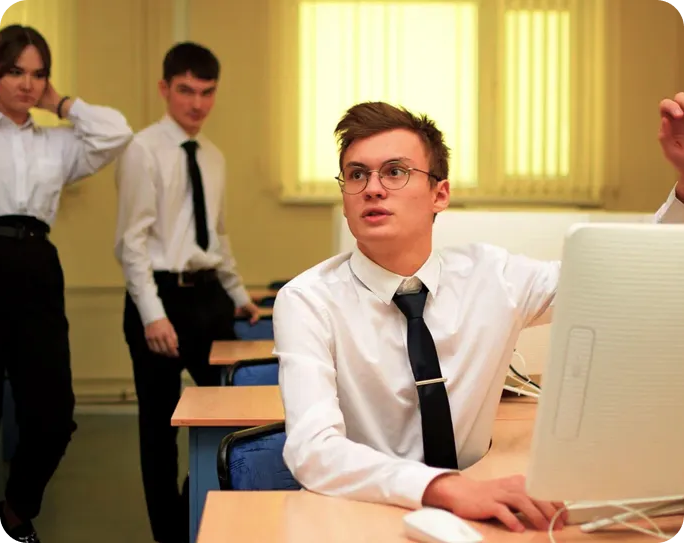
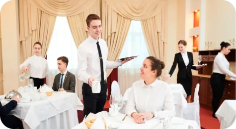
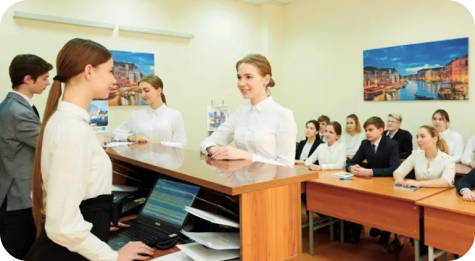
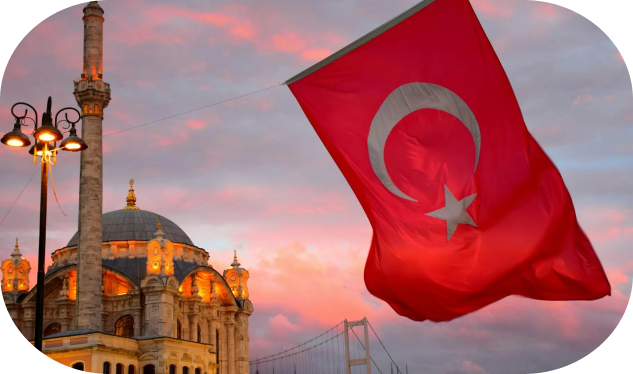
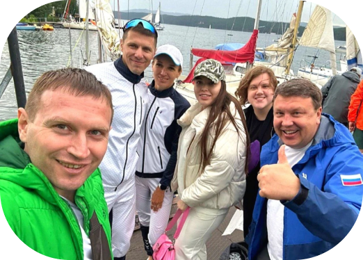

История кафедры
2007
Кафедра гостеприимства и международных бизнес-коммуникаций была основана в 2007 году как ответ на растущий интерес к развитию туристической отрасли и индустрии гостеприимства в России.
В 2007 году кафедра начала свою деятельность с подготовки специалистов по туристическому менеджменту. В этот период было разработано несколько базовых курсов, включая "Основы туризма", "Менеджмент в индустрии гостеприимства" и "Межкультурные коммуникации". Первыми партнерами кафедры стали крупные региональные туристические агентства и гостиницы.

Кафедра гостеприимства и международных бизнес-коммуникаций — это современный образовательный и научный центр, который сочетает традиции качественного образования с инновационными подходами к подготовке специалистов. Ее выпускники востребованы по всей стране и за рубежом, создавая новые стандарты качества в индустрии туризма и гостеприимства.


Работадатели и трудоустройство
Кафедра гостеприимства и международных бизнес-коммуникаций на протяжении многих лет успешно сотрудничает с ведущими компаниями в индустрии туризма, гостеприимства и сервиса. Благодаря этим партнерствам студенты кафедры получают уникальные возможности для стажировок, практического обучения и дальнейшего трудоустройства.
Учебные поездки и стажировки
Студенты регулярно проходят практику в гостиницах, туристических компаниях и на объектах культурного наследия. Это позволяет закрепить теоретические знания и получить реальный опыт работы в индустрии.
По данным кафедры, более 85% выпускников находят работу по специальности в первые шесть месяцев после окончания учебы. Многие начинают свою карьеру еще в процессе обучения благодаря тесному сотрудничеству с работодателями.
Благодаря международным партнёрствам, выпускники кафедры успешно работают в Европе, Азии и странах Ближнего Востока, занимая должности от администраторов гостиниц до менеджеров туристических проектов.

